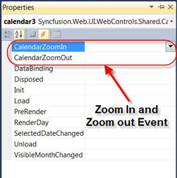
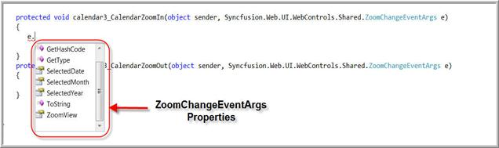

The default Calendar Navigation mode property value is Default. If the property value is changed to Windows7 the calendar will navigate to the month, year, and 10-year views when clicking on the header.
Calendar Zooming Properties
1. Set the Navigation Mode to Windows7.
|
[ASPX]
<syncfusion:Calendar ID="Calendar1" runat="server" NavigationMode="Windows7" Height="245px" Width="255px" />
[C#] Calendar1.NavigationMode = NavigationMode.Windows7;
[VB] Ccalendar1.NavigationMode = Syncfusion.Web.UI.WebControls.Shared.CalendarControl.NavigationMode.Windows7
|
2. Client-side events ZoomIn and ZoomOut with parameter.
|
[ASPX] <syncfusion:Calendar ID="calendar3" runat="server" NavigationMode="Windows7" ClientSideOnZoomIn="ZoomIn(this)" ClientSideOnZoomOut="ZoomOut(this)" />
[C#] calendar3.ClientSideOnZoomIn = "ZoomIn(this)"; calendar3.ClientSideOnZoomOut = "ZoomOut(this)";
[VB] calendar3.ClientSideOnZoomIn = "ZoomIn(this)" calendar3.ClientSideOnZoomOut = "ZoomIn(this)" |
3. Set auto postbacks for ZoomIn and ZoomOut server-side events.
|
[ASPX]
<syncfusion:Calendar ID="calendar3" runat="server" NavigationMode="Windows7" AutoPostBackOnCalendarZoomIn="true" AutoPostBackOnCalendarZoomOut="true" />
[C#] calendar3.AutoPostBackOnCalendarZoomIn = true; calendar3.AutoPostBackOnCalendarZoomOut = true;
[VB] calendar3.AutoPostBackOnCalendarZoomIn = True calendar3.AutoPostBackOnCalendarZoomOut = True
|
Calendar Zooming Server-side Events
The steps for server-side zoom in and zoom out events with arguments are as follows:
1. ZoomIn events fired in server side.
[ASPX]

Figure 2: Calendar Server-side ZoomIn and ZoomOut Events
The above image shows the server events. You can double click the CalendarZoomIn and CalendarZoomOut the events are automatically fired.
|
[C#]
protected void calendar3_CalendarZoomIn(object sender, Syncfusion.Web.UI.WebControls.Shared.ZoomChangeEventArgs e) {
} protected void calendar3_CalendarZoomOut(object sender, Syncfusion.Web.UI.WebControls.Shared.ZoomChangeEventArgs e) {
}
[VB]
Protected Sub Calendar3_CalendarZoomIn(ByVal sender As Object, ByVal e As Syncfusion.Web.UI.WebControls.Shared.ZoomChangeEventArgs) Handles calendar3.CalendarZoomIn
End Sub
Protected Sub Calendar3_CalendarZoomOut(ByVal sender As Object, ByVal e As Syncfusion.Web.UI.WebControls.Shared.ZoomChangeEventArgs) Handles calendar3.CalendarZoomOut
End Sub
|
2. ZoomIn events arguments with values.

Figure 3: Calendar Server-side Zoom Arguments Properties